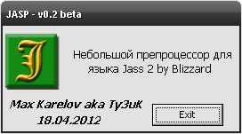

About programm
JASP is the new preprocessor that extends Jass 2 language of Blizzard with a few comfortable additions.

About window
Jasp us not the product of 'bicycle-inventing' type. It also won't replace cJass and/or vJass as it brings new changes in coding. See User Manual to discover more.